Finally, I want to examine two things: everything about this process “oneex” and any IP addresses stored in the memory. Here, I prefer using the strings command to extract all strings and match them for further analysis.
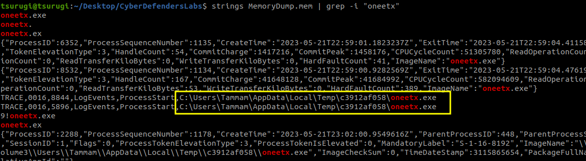
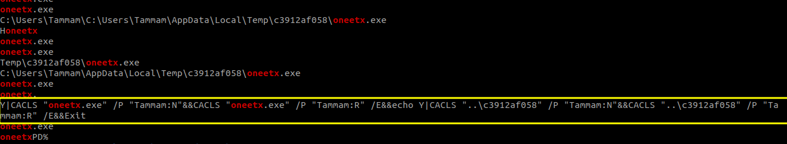
Here is another finding:
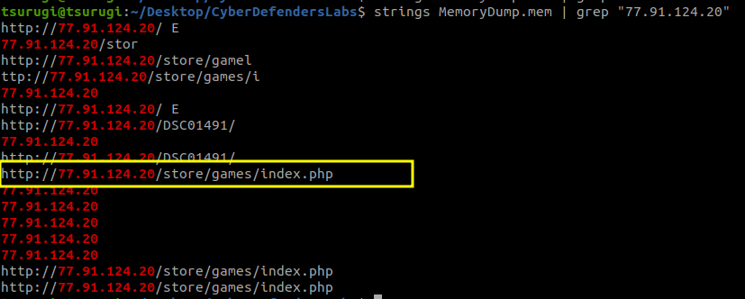
Very nice, now that we have our findings, let’s proceed to answer the questions.
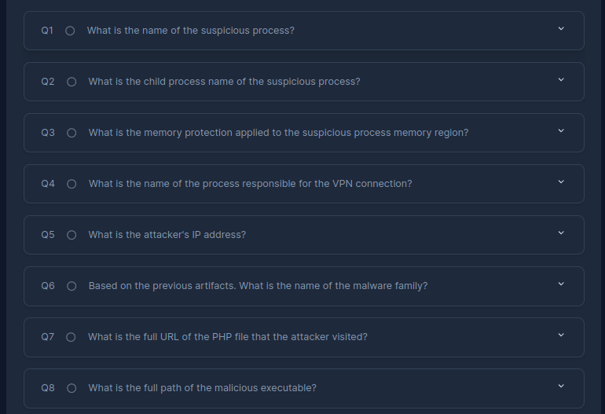
Q1: oneetx.exe
Q2: rundll32.exe
Q3: we can find it here:
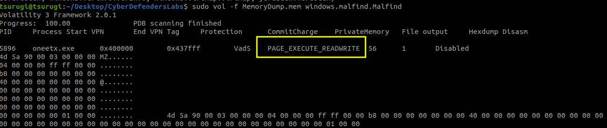
Q4: Outline.exe
Q5: 77.91.124.20
Q6: redline stealer
Q7: hxxp://77.91.124.20/store/games/index.php
Q8: C:\Users\Tammam\AppData\Local\Temp\c3912af058\oneetx.exe
In conclusion, our proactive investigation enabled us to gather a lot of findings and understand what happened even before we looked at the questions. This approach, I believe, develops skills as it encourages a deeper understanding of the situation at hand.
Finally, I want to examine two things: everything about this process “oneex” and any IP addresses stored in the memory. Here, I prefer using the strings command to extract all strings and match them for further analysis.
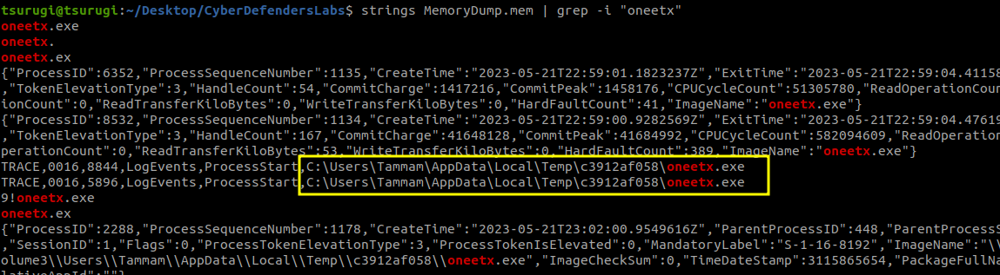
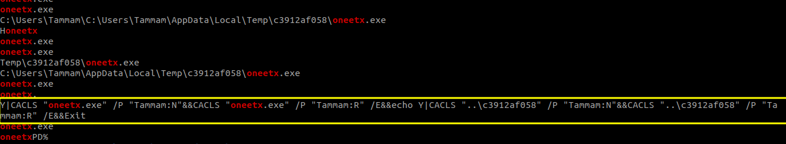
Here is another finding:
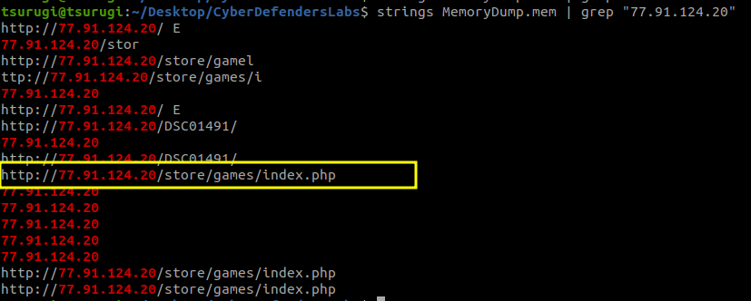
Very nice, now that we have our findings, let’s proceed to answer the questions.
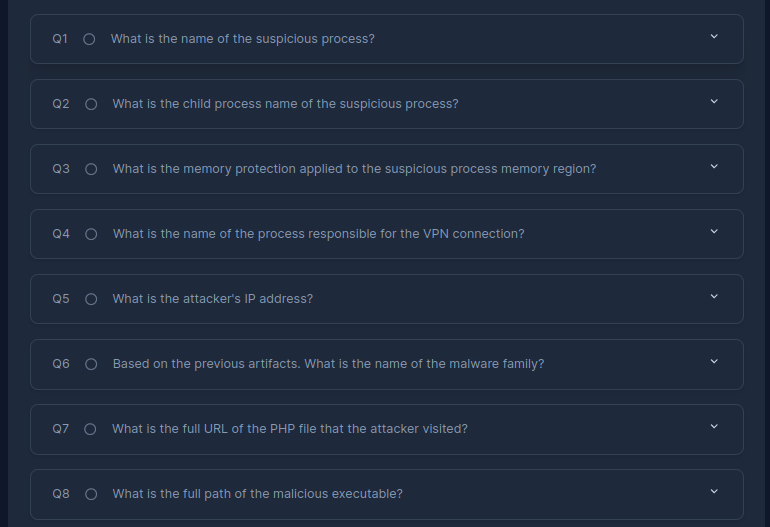
Q1: oneetx.exe
Q2: rundll32.exe
Q3: we can find it here:
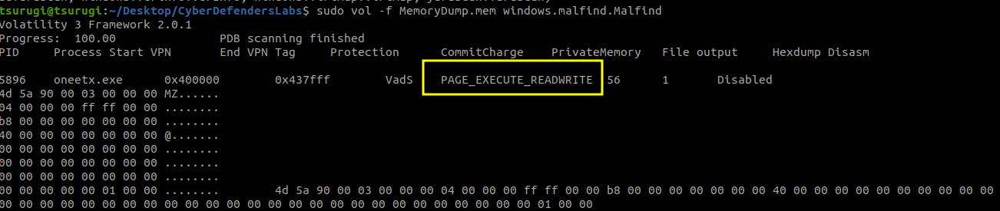
Q4: Outline.exe
Q5: 77.91.124.20
Q6: redline stealer
Q7: hxxp://77.91.124.20/store/games/index.php
Q8: C:\Users\Tammam\AppData\Local\Temp\c3912af058\oneetx.exe
In conclusion, our proactive investigation enabled us to gather a lot of findings and understand what happened even before we looked at the questions. This approach, I believe, develops skills as it encourages a deeper understanding of the situation at hand.
/Beyond the Walkthoughs: Building a Strategic Approach to Blue Team Labs
🗓️ 10 April 2024 👻 Yusuf Amr
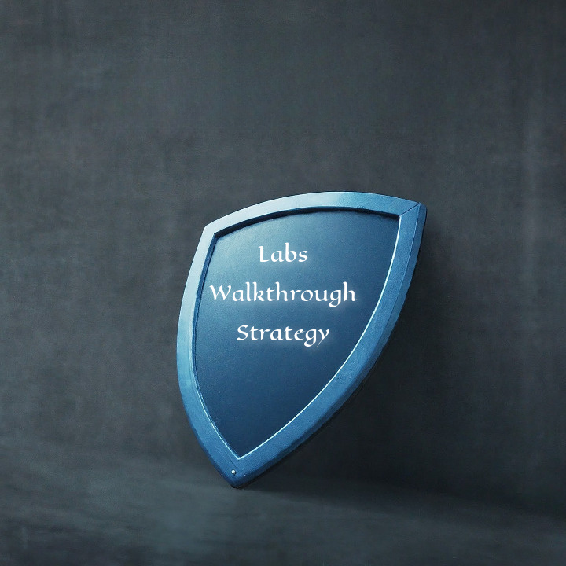
In this article, I want to share a tip strategy for tackling cybersecurity labs effectively. We’ve all experienced it: staring at a scenario, rushing into answering the questions, and blindly copying commands without grasping the process. Although these labs simulate real-world situations, this method doesn’t prepare you for the actual challenges. So, I’ll present an alternative walkthrough that I believe is more effective and hopefully beneficial for you.
Here’s the Strategy:
The strategy prioritizes understanding the scenario first. By actively asking ourselves investigative questions and seeking answers, we document our findings, building a comprehensive picture of the attack. Instead of reacting to pre-defined questions, we’re uncovering the story ourselves. We start by identifying artifacts left behind by the attacker. These artifacts become our initial clues, leading us to explore attacker behavior and ultimately, the root cause of the compromise.
Steps:
1. Get Into the Scene: Before jumping into questions, take a moment to truly grasp the scenario. Imagine yourself right in the middle of it. What security threats are apparent? What might have caused the problem? What do we need to look for? Where do we begin?
2. Suspect Malware? Time for Investigation: We have a memory dump. How do we uncover it? Let’s search for tools. You might find Volatility, a useful tool! How to get into a good start point?
3. Track the Clues: With Volatility, you might find commands to spot suspicious stuff. You’re getting it, sharpening those critical thinking skills.
Feeling stuck? No problem!
If you’re feeling lost, take a look at the first question. It might provide a helpful hint to guide you back on track. But keep it as your last option.
The more you approach labs this way, the more skilled you’ll become. This is the skillset you want to improve.
This is the lab we will practice with in the article:
Given Scenario
As a member of the Security Blue team, your assignment is to analyze a memory dump using Redline and Volatility tools. Your goal is to trace the steps taken by the attacker on the compromised machine and determine how they managed to bypass the Network Intrusion Detection System “NIDS”. Your investigation will involve identifying the specific malware family employed in the attack, along with its characteristics. Additionally, your task is to identify and mitigate any traces or footprints left by the attacker.
Lab Link: https://cyberdefenders.org/blueteam-ctf-challenges/redline
Here you can find Volatility cheatsheet:
https://blog.onfvp.com/post/volatility-cheatsheet
First command at the cheatsheet is listing all processes on the memory, so why not let’s do it? By the way, there’s also a command in Volatility to find malicious processes directly. I always recommend writing vol -h to read the full list of commands and options. You can choose whichever one suits your needs. But for this example, I prefer to list all processes and see them in a tree form to visualize parent-child processes. This can be achieved using the following command:
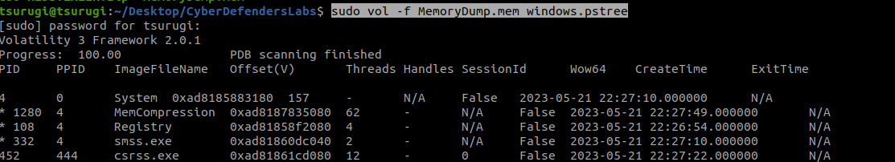
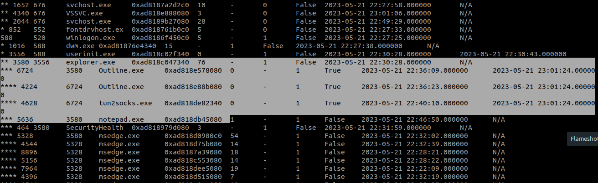
I examined all running processes and noticed interesting entry: outline. Outline is a known VPN software.
This caught my attention, as it suggests a potential attempt to establish a VPN connection. To investigate further, I’ll need to analyze the network traffic and see if there’s any evidence of VPN activity.
While I’m unfamiliar with tun2socks.exe, the name hints at a possible connection to VPN functionality. To confirm its role, a quick Google search is in order.
Here’s what I found online
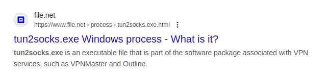
After examining the initial processes, I continued my investigation and explored others on the system. As expected, most were common Windows services, along with applications like msedge (Microsoft Edge browser), skype, and FTK (forensic toolkit software). However, one process stood out: oneetx.exe.
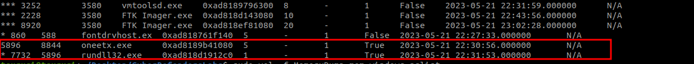
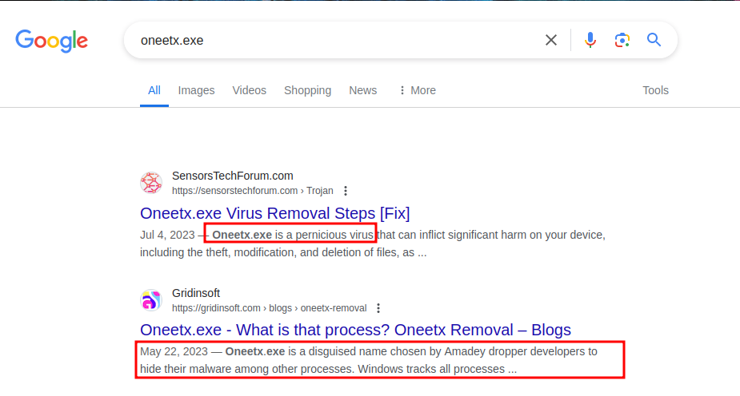
Unfamiliar with this process, I conducted a quick online search to learn more about it. My research revealed that oneetx.exe is associated with a dangerous malware program known as Amadey dropper. This malware is known for its ability to steal sensitive information and install additional malicious payloads on the infected system.
Here, I was able to gather additional information. Typically, infections occur through downloading games, and analyzing the infected path on the system has helped in understanding the behavior.
https://www.vmray.com/analyses/_mb/a4ac65cada8b/report/behavior_grouped.html
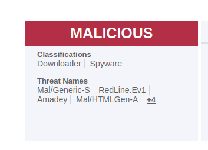
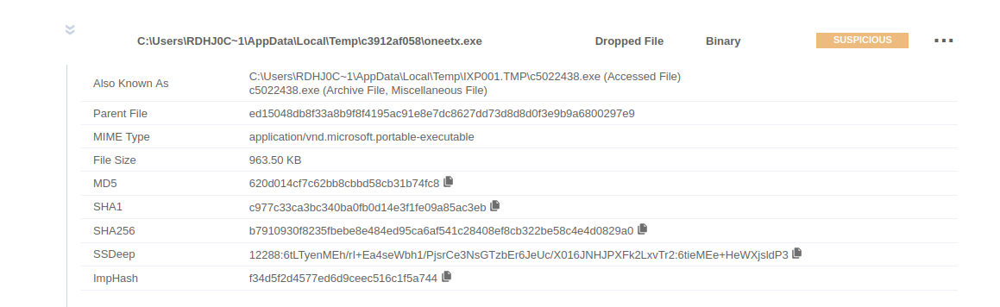
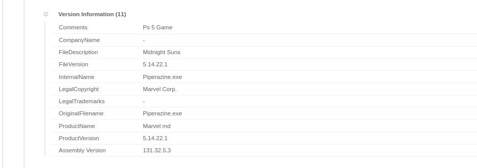
I saved its PID: 5896. That’s nice; that was straightforward.
Let’s add to our findings.
And as you can see, why I prefer pstree, because I noticed that there is a child process for the oneetx and outline.
Now, let’s try the malfind command in Volatility, which lists processes that potentially contain injected code, called windows.malfind.Malfind. So, let’s try it.
Here, the results confirm our findings:
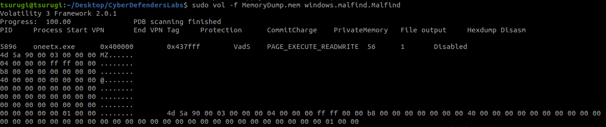
Now, what if I want to retrieve the hash of this process to search more about it and add to our findings? We can utilize the Volatility cheatsheet for this purpose.
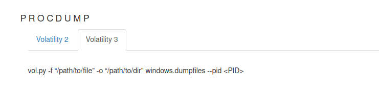
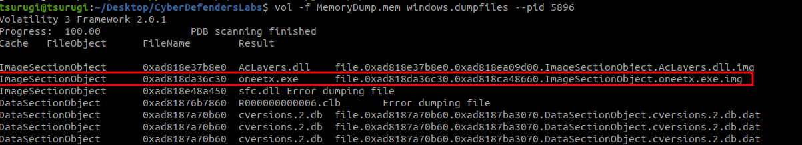
Great! Lets check its reputation:
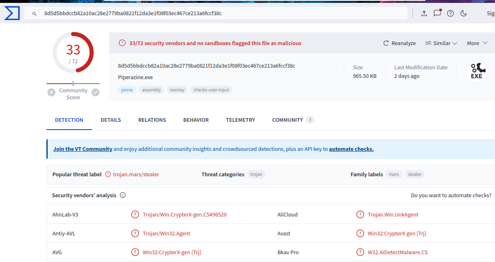
The process name was the same as what we found earlier. This implies that the user downloaded the game, and here lies the root cause. It would be beneficial if we find any URLs related to it. So now, let’s move on to the network traffic analysis to check if there are any connections from the malicious oneetx process we found, and also to verify the VPN we identified earlier. This can be accomplished using the netscan command in Volatility.
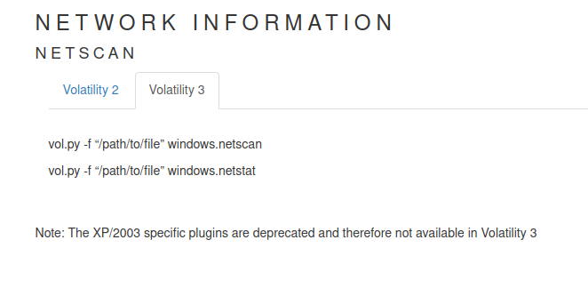
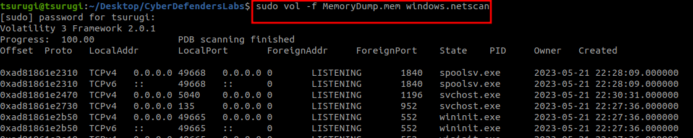
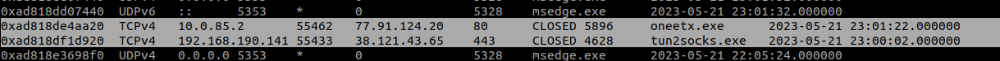
As observed, the VPN connections were established before the malicious process oneetx directly. This correlation suggests that it might have been orchestrated by the attacker. However, to gather more indicators, we can get more deeply into the network activity and examine other potential points of compromise.
Well, I found another indicator here:
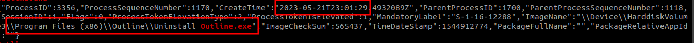
This indicator further confirms that the VPN connection with the attacker was established prior to executing the process and promptly deleting its traces afterward.
Upon inspecting the IPs, I found “77.91.124.20” which was associated with oneetx.exe:
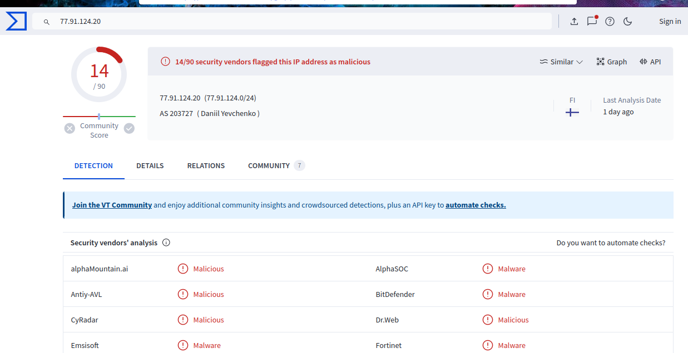
Finally, I want to examine two things: everything about this process “oneex” and any IP addresses stored in the memory. Here, I prefer using the strings command to extract all strings and match them for further analysis.
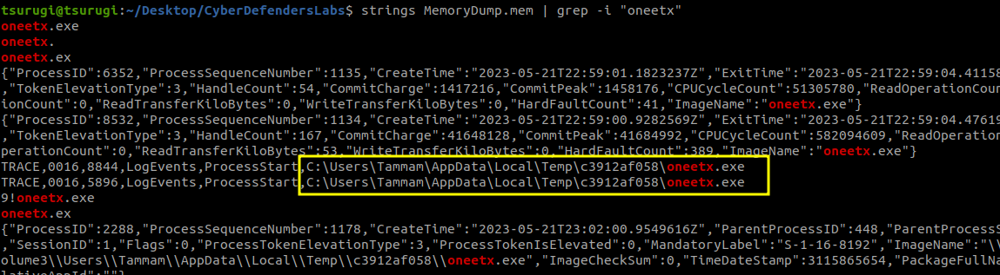
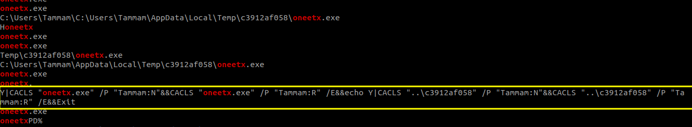
Here is another finding:
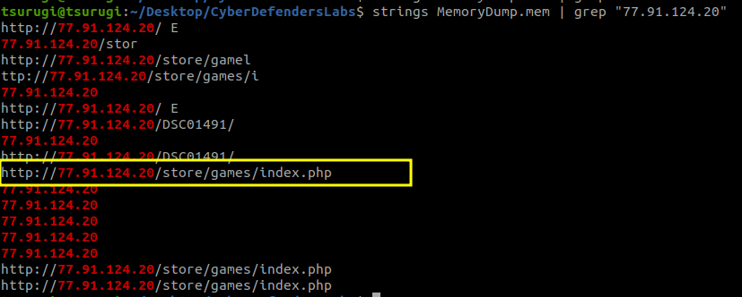
Very nice, now that we have our findings, let’s proceed to answer the questions.
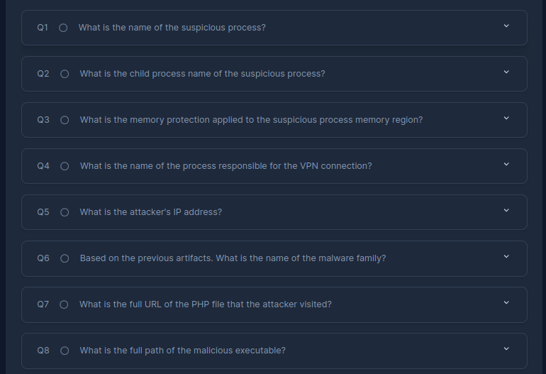
Q1: oneetx.exe
Q2: rundll32.exe
Q3: we can find it here:
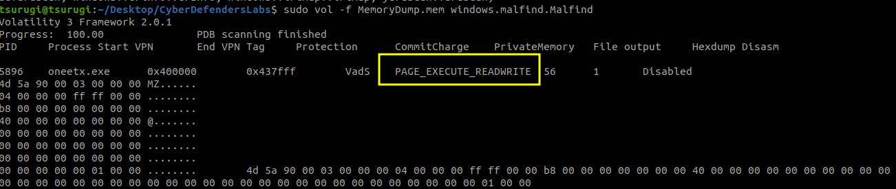
Q4: Outline.exe
Q5: 77.91.124.20
Q6: redline stealer
Q7: hxxp://77.91.124.20/store/games/index.php
Q8: C:\Users\Tammam\AppData\Local\Temp\c3912af058\oneetx.exe
In conclusion, our proactive investigation enabled us to gather a lot of findings and understand what happened even before we looked at the questions. This approach, I believe, develops skills as it encourages a deeper understanding of the situation at hand.
Finally, I want to examine two things: everything about this process “oneex” and any IP addresses stored in the memory. Here, I prefer using the strings command to extract all strings and match them for further analysis.
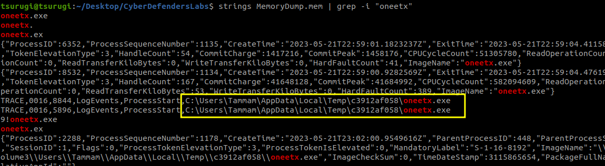
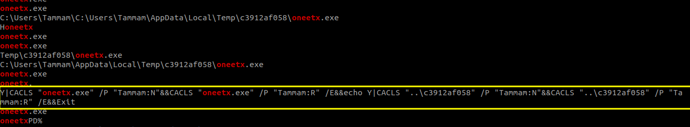
Here is another finding:
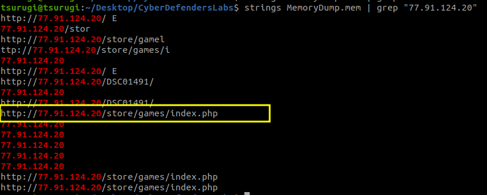
Very nice, now that we have our findings, let’s proceed to answer the questions.
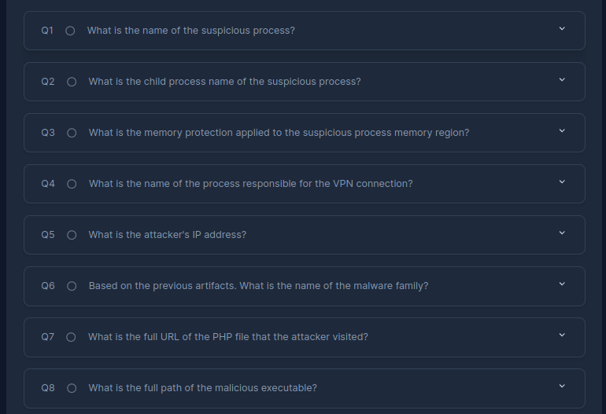
Q1: oneetx.exe
Q2: rundll32.exe
Q3: we can find it here:
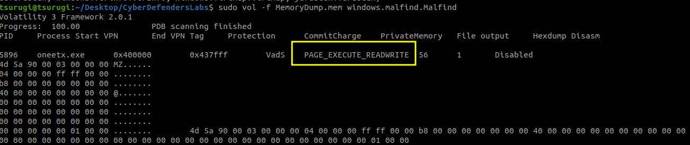
Q4: Outline.exe
Q5: 77.91.124.20
Q6: redline stealer
Q7: hxxp://77.91.124.20/store/games/index.php
Q8: C:\Users\Tammam\AppData\Local\Temp\c3912af058\oneetx.exe
In conclusion, our proactive investigation enabled us to gather a lot of findings and understand what happened even before we looked at the questions. This approach, I believe, develops skills as it encourages a deeper understanding of the situation at hand.